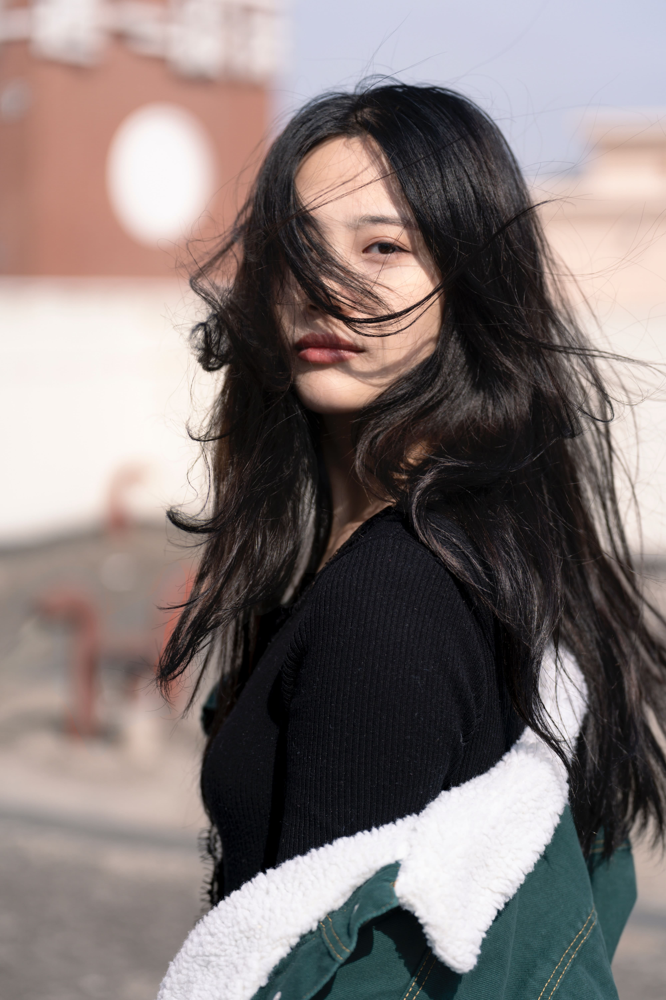

“Cái răng cái tóc là gốc con người.”
Mái tóc tượng trưng cho nét thanh xuân, vẻ đẹp xuân thì của người phụ nữ. Nhưng giữ gìn mái tóc đẹp bền vững theo năm tháng luôn là một trong những trăn trở của họ. Nữ giới độ tuổi này cũng bắt đầu xuất hiện nhiều hơn những dấu hiệu lão hóa tóc như gãy rụng, khô xơ, chẻ ngọn.
Nắm bắt được điều này, Hoa Niên đã ra đời với tinh thần đem đến những sản phầm chăm sóc và phục hồi mái tóc hư tổn, và còn phong phú về mùi hương được tinh chọn từ những hương hoa dịu nhẹ có tác dụng trị liệu, giúp đem lại trải nghiệm thoải mái, sảng khoái sau những ngày dài mệt mỏi.
Mái tóc tượng trưng cho nét thanh xuân, vẻ đẹp xuân thì của người phụ nữ. Nhưng giữ gìn mái tóc đẹp bền vững theo năm tháng luôn là một trong những trăn trở của họ. Nữ giới độ tuổi này cũng bắt đầu xuất hiện nhiều hơn những dấu hiệu lão hóa tóc như gãy rụng, khô xơ, chẻ ngọn.
Nắm bắt được điều này, Hoa Niên đã ra đời với tinh thần đem đến những sản phầm chăm sóc và phục hồi mái tóc hư tổn, và còn phong phú về mùi hương được tinh chọn từ những hương hoa dịu nhẹ có tác dụng trị liệu, giúp đem lại trải nghiệm thoải mái, sảng khoái sau những ngày dài mệt mỏi.